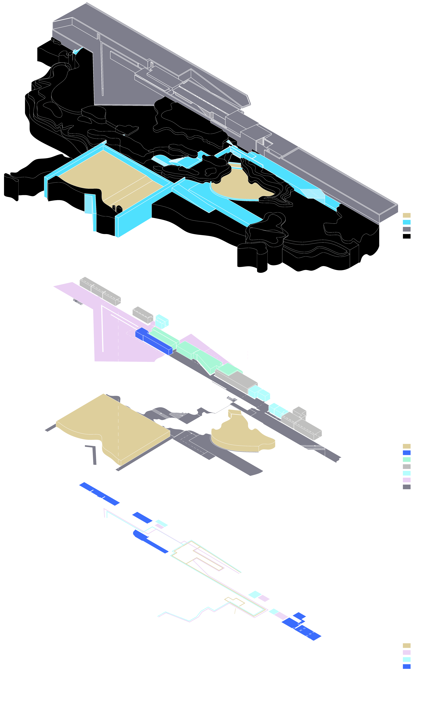
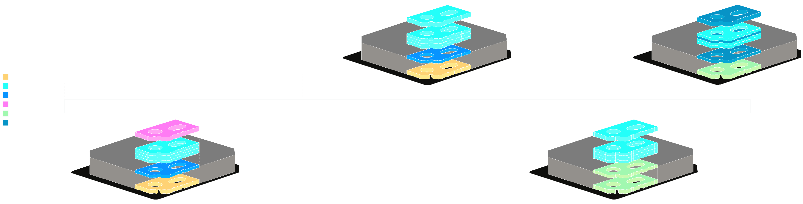

Architecture Coursework
While studying at the University of Chicago, I spent a year at the Architectural Association School of Architecture in London. There, I picked up technical drawing and visualisation skills through a project-based curriculum. This is a selection from a wider portfolio of projects. It includes a study of the Leça Swimming Pools by Álvaro Siza Vieira, and a study of Casa Milà by Antoni Gaudí.